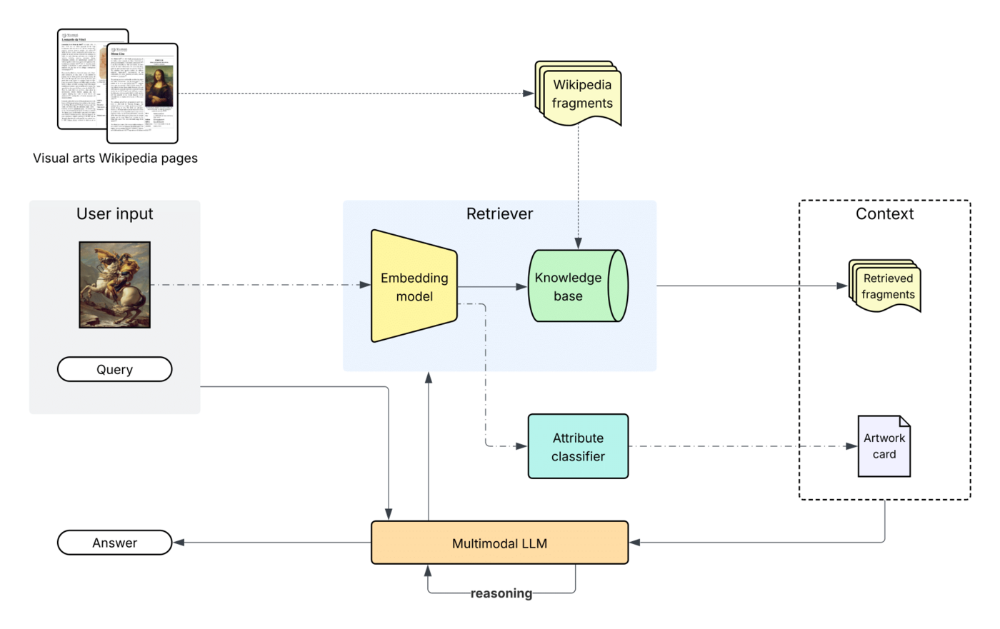
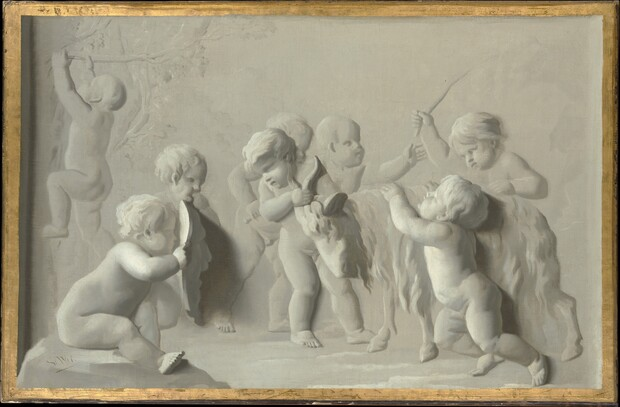

PhD Research Talk · PhDays 2026
Analysis and valorization of
digitized artistic heritage
using Artificial Intelligence techniques
Funded by the Italian NRRP fellowship — D.M. n. 118/23, Mission 4 · NextGenerationEU
The through-line
Teaching machines to see — and to understand art.
My PhD centers on vision–language models (VLMs / multimodal LLMs) applied to digitized artworks — bridging what a model perceives and what a painting means.
Perceive
Models that look at an image and recognize what is depicted — objects, figures, composition.
Describe
Turning visual perception into language — captions, answers, and reasoned explanations.
Contextualize
Grounding descriptions in art-historical knowledge — style, artist, iconography, culture.
Interpret
Opening the black box: why does the model say what it says? What does its latent space encode?
Three contributions trace this arc — a system that understands artworks, one that creates within them, and one that interprets the models themselves.
Three works, one arc
ArtSeek
Deep artwork understanding via multimodal retrieval & agentic reasoning.
arXiv 2507.21917 · 2025
I Dream My Painting
MLLMs + diffusion for text-guided multi-mask inpainting.
WACV 2025 · arXiv 2411.19050
Token Activation Maps
Understanding how MLLMs ground their descriptions of artworks.
ICPR 2026 · PRESTIGE workshop
01 · Understand
ArtSeek
Deep artwork understanding via multimodal in-context reasoning & late-interaction retrieval
Understand any artwork from the image alone — no link to a database required — by retrieving knowledge, classifying attributes, and reasoning like an agent.
Multimodal retrieval
Late-interaction search (built on ColQwen2) over WikiFragments — 5.6M image–text fragments from Wikipedia's visual arts.
LICN classification
A Late-Interaction Classification Network predicts artist, style, genre, media & tags in one contrastive pass.
Agentic reasoning
Qwen2.5-VL-32B reasons with <think> steps and calls the retriever as a tool to ground its answer.

WikiFragments
A Wikipedia-scale, multimodal knowledge base built for grounding. Each fragment pairs a paragraph with the image that sits above it on the page — a single image–text document the late-interaction retriever can search. This is what lets ArtSeek explain even obscure works it was never explicitly trained on.

The relief shows a group of “putti” pulling a goat by the horns. One of them is lashing it with a stick, while the “putto” next to him is reaching his left hand to the hovering stick. … According to Bellori, Cardinal Francesco Barberini donated the relief to Philip IV of Spain; the relief is currently housed at the Galleria Doria Pamphilj in Rome.
Live example · reconstructed from the paper
A conversation with ArtSeek
This transcript is a real example from the paper (Fig. 6). It lives in js/content.js — swap it for your recorded demo anytime.
02 · Create
I Dream My Painting
Connecting MLLMs & diffusion models via prompt generation for text-guided multi-mask inpainting
Restore or reimagine a painting by filling many regions at once — each with its own text prompt, generated automatically and bound precisely to its area.
Prompt generation
A QLoRA-tuned LLaVA writes a caption for each region — outperforming baselines on accuracy, BLEU, ROUGE-L & CLIP similarity.
Rectified Cross-Attention
A lightweight change to Stable Diffusion's attention forces each prompt onto its designated mask — better FID & LPIPS.
Where it works
Validated on WikiArt paintings and Densely Captioned Images, for 1- to 5-mask scenarios.
WACV 2025 project page · github · arXiv 2411.19050
A research visit · pivot to interpretability
Six months at the University of Zürich
From September 1, 2025 to March 1, 2026, I worked under Dr. Eva Cetinic, focusing on the interpretability of the latent space of vision–language models.
The question shifts: from building models that describe art, to understanding what happens inside them.
03 · Interpret
Token Activation Maps
Understanding how MLLMs describe artworks
When a model writes a caption, does it look where it says it looks? Token Activation Maps trace each generated word back to the image region that produced it.
Pick a painting
What we found
Concrete objects (CVO) localize sharply; style and affect tokens activate diffusely across the whole canvas.
Models identify the artist far more reliably than the title — visual style is more legible than a specific work's identity.
On wrong guesses, models lean on textual priors — e.g. captioning Manet's Luncheon on the Grass as “Olympia,” another Manet work.
ICPR 2026 · PRESTIGE with Eva Cetinic · interactive demo · arXiv 2606.27947
Publications & academic service
Publications
The three works from this talk — spanning understanding, generation and interpretation of art with vision–language models.
ArtSeek: Deep artwork understanding via multimodal in-context reasoning & late-interaction retrieval
I Dream My Painting: Connecting MLLMs and Diffusion Models via Prompt Generation for Text-Guided Multi-Mask Inpainting
Understanding How MLLMs Describe Artworks Using Token Activation Maps
The full publication record
Other activities · academic service
Organizing, reviewing & talks
Workshop organizing
- Program Committee — PRESTIGE workshop @ ICPR 2026
- Co-organizer — FAPER (Fine Art Pattern Recognition) @ ICIAP 2025
Invited talks
- Tutorial “AI for Visual Arts”
- Presented ArtSeek at “From Hype to Reality: AI in the Study of Art & Culture” University of Zürich · Nov 2025
Reviewer · conferences
Reviewer · journals
Toward vision–language models for cultural heritage that are not only capable, but grounded, generative, and understandable.
Nicola Fanelli · University of Bari Aldo Moro · nicola.fanelli@uniba.it